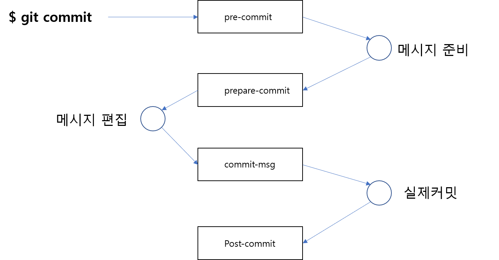

커밋 훅은 커밋 동작에 반응하는 스크립트를 말합니다. 커밋의 동작은 4가지로 구분하여 각 동작에 맞는 스크립트를 작성할 수 있습니다.

단어 그대로 커밋이 실행되기 전에 동작을 하는 스크립트입니다. pre-commit 스크립트는 깃이 스냅샷을 생성할 때 이를 점검합니다.
커밋을 작업하기 전에 미리 사전에 체크해야 하는 동작을 추가합니다. pre-commit 스크립트는 확실한 커밋 동작을 검사하고 수행을 도와 줍니다. 예를 들어 코드 스타일이나 공백문자를 검사할 때도 좋습니다.
다음은 기본적으로 제공되는 샘플 스크립트 예제입니다.
infoh@DESKTOP-VAKLOFQ MINGW64 /e/githooks/.git/hooks (GIT_DIR!) $ cat pre-commit.sample
#!/bin/sh #
#
if git rev-parse –verify HEAD >/dev/null 2>&1 then against=HEAD else # Initial commit: diff against an empty tree object against=$(git hash-object -t tree /dev/null) fi
allownonascii=$(git config –bool hooks.allownonascii)
exec 1>&2
if [ “$allownonascii” != “true” ] && # Note that the use of brackets around a tr range is ok here, (it’s # even required, for portability to Solaris 10’s /usr/bin/tr), since # the square bracket bytes happen to fall in the designated range. test $(git diff –cached –name-only –diff-filter=A -z $against | LC_ALL=C tr -d ‘[ -~]\0’ | wc -c) != 0 then cat «\EOF Error: Attempt to add a non-ASCII file name.
This can cause problems if you want to work with people on other platforms.
To be portable it is advisable to rename the file.
If you know what you are doing you can disable this check using:
git config hooks.allownonascii true EOF exit 1 fi
exec git diff-index –check –cached $against –
소스 코드에서 exit 1로 반환하는 부분을 확인할 수 있습니다. 반환값으로 0이 아닌 값으로 설정하면, 커밋 동작을 취소할 수 있습니다.
Pre-commit 스크립트를 작성한 후에 터미널의 명령을 이용하여 동작을 배제할 수도 있습니다.
$ git commit –no-verify
–no-verify 옵션은 커밋 명령어를 실행할 때 pre-commit 스크립트를 실행하지 말라는 명령입니다.
커밋은 메시지를 작성합니다. 기본값으로 커밋 명령을 실행할 때 메시지를 입력하기 위해 vi 에디터가 실행됩니다.
Prepare-commit-msg는 단어 그대로 사전 pre-commit 동작 후 실제 vi 에디터가 시행되기 전단계에 실행되는 스크립트입니다.
이 스크립트는 커밋 메시지에 들어 있는 파일 경로, 커밋 타입 등을 인자로 받을 수 있습니다. 만일 마지막 커밋을 수정할 때는 이전의 SHA1 값도 같이 인자로 전달받습니다.
커밋 메시지는 보통 merge, squash, amend 등과 같은 명령어들을 실행할 때 작성합니다. Prepare-commit-msg는 커밋의 메시지를 템플릿화하여 작성하려고 할 때 유용합니다.
커밋 메시지를 작성하고 동작을 완료하기 전 단계에 동작하는 스크립트입니다. 커밋 메시지가 정장적으로 작성되었는지 등을 검사할 수 있습니다.
Commit-msg 스크립트는 커밋 메시지의 임시 파일 경로를 인자값으로 전달받습니다.
이 스크립트의 반환값이 0이 아닌 경우에는 커밋이 취소됩니다.
커밋의 동작이 모두 완료될 때 실행되는 스크립트입니다. 최종적으로 커밋한 SHA1은 git log -1 HEAD 명령어를 사용하면 알 수 있습니다.
post-commit을 이용하여 이슈를 처리하거나, 다른 동작들을 추가할 수 있습니다.
공유 저장소의 경우 post-commit 대신 update 훅을 더 많이 사용합니다.